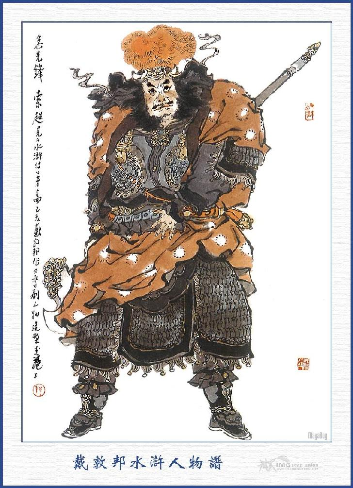
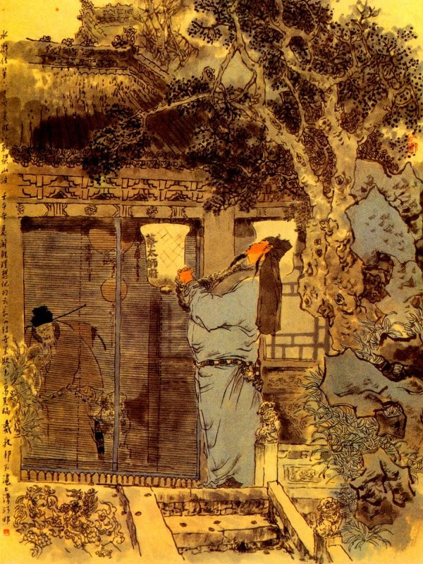

Bấy giờ Thạch Tú cùng Lư Tuấn Nghĩa còn đương quanh quẩn trong thành, tìm lối để tháo, bất đồ bị quân mã bốn mặt đổ lại, thả giây móc mà bắt cả đôi người rồi trói chặt giải vào trong phủ. Khi vào tới nơi, Lương Trung Thư sai đem tên cướp pháp trường, lên trước công trường để hỏi. Thạch Tú lên đến nơi, trợn trừng mắt ầm lên rằng:
- Bớ quân đi làm đầy tớ, những tên đầy tớ kia, Ca Ca ta nay mai đem binh đến đánh phá thành Đại Danh, chém thây ngươi ra làm mấy đoạn, ngày nay sai lão gia đến đây, để báo trước cho mày đó.
Chàng vừa nhiếc vừa mắng luôn mồm không thôi, bao nhiêu người đứng đó, đều ngây hẳn người ra. Lương Trung Thư thấy vậy, trong bụng băn khoăn nghĩ ngợi hồi lâu rồi sai lấy gông ra gông hai người lại, đem giam vào ngục tử tù mà dặn Xái Phúc phải trông coi cho cẩn thận. Xái Phúc nguyên có ý muốn làm quen với bọn hảo hán Lương Sơn Bạc, liền cho Lư Tuấn Nghĩa cùng Thạch Tú vào một nhà lao sạch sẽ và thiết cơm rượu rất là chu đáo, không hề có một điều chi khinh bỉ.
Bấy giờ Lương Trung Thư sai quan Vương Thái Thú ở bản châu đi kiểm điểm số người bị thương, thấy có bảy tám mươi người bị chết, còn thì gãy chân gãy tay vỡ đầu vỡ mặt, không biết tới đâu mà kể, Lương Trung Thư liền cho lấy tiền kho ra để cứu chữa người đau và chôn hoá những người bị chết.
Ngày hôm sau bỗng thấy có người nhặt được mấy mươi tờ yết thị của bọn Lương Sơn Bạc, đem trình với Lương Trung Thư. Trung Thư cất lấy xem, thấy trong tờ yết thị rằng:
- "Nghĩa sĩ ở Lương Sơn Bạc là Tống Giang có lời nói cho các quan ở trong thành Đại Danh biết Lư Tuấn Nghĩa là một bậc hào kiệt nhất đời, ta muốn đón lên trên núi để cùng thay Trời làm Đạo, sinh phúc cho dân, thế mà các ngươi dám nghe kẻ gian tà lại hại người lương thiện rồi sao bắt cả người đưa tin của ta là Thạch Tú vào ngục là nghĩa làm sao? Nếu các ngươi biết điều mà giữ toàn tính mệnh cho hai người mà bắt đứa gian phu, dâm phụ đem ra nộp thì ta đây cũng không sinh sự làm chi; Bằng cố tình làm hại hai người thì nay mai nhổ trại đem quân đại binh đến đâu, đá vàng tan nát, trừ hết gian tham, giết tàn ngu bỉ, trời đất chứng minh, quỷ thần phò hộ, vui mừng mà đến, khua múa mà đi; Bao nhiêu con hiếu cháu lành, quan liêm lại tốt, cùng hết thẩy con dân, cứ yên phận làm ăn, không có việc chi kinh khủng. Các ngươi nên biết ý ta.”
Lương Trung Thư xem đến đó, liền gọi Thái Thú họ Vương đến để bàn định xem sao. Vương Thái Thú vốn người rút rát, lại nghe những lời nói trong tờ yết thị thì trong lòng lấy làm lo sợ, bèn đến nói với Lương Trung Thư rằng:
- Bọn Lương Sơn Bạc xưa nay triều đình muốn khu trừ không được, huống chi là một quận ta đây thì thấm vào đâu. Ngộ lỡ ra nay mai bọn ấy đem quân đến đánh mà ta đây không có binh viện thì hối sao cho kịp? Vậy cứ như ý tôi, thiết tưởng ta nên lưu tính mạng hai người đó, nhất diện biểu tấu triều đình, nhất diện viết giấy báo cho Xài Thái Sư biết và đem quân mã của bản châu ra ngoài thành hạ trại để phòng bị thì may ra mới có thể chu toàn cho phủ Đại Danh mà dân gian mới yên phận mà làm ăn được. Bằng nay giết hai tên đó đi thì khi quân giặc đến nơi, một là không có binh cứu viện, hai là triều đình đem bụng nghi ngờ mà ba là dân sự rối loạn thì thành Đại Danh tất là nguy hiểm đến nơi.
Lương Trung Thư nghe nói khen rằng:
- Quan phủ nói thế rất phải, ta cũng phải làm thế mới xong.
Nói rồi liền gọi Tiết Cấp và Xái Phúc lên mà dặn rằng:
- Hai tên giặc đó không phải là tội tầm thường, ngươi phải trông nom cho cẩn thận, không được hại đến người ta mà cũng chớ cho nó trốn được. Việc đó tất phải vừa khoan vừa nhặt mà coi giữ luôn luôn, để sau này sẽ liệu.
Xái Phúc nghe nói đúng với tâm lý của mình đang thích liền vâng lời trở xuống nhà lao mà theo lệnh để thi hành.
Lương Trung Thư gọi hai người binh mã Đô Giám là Đại Đao, Văn Đạt và Thiên Vương Lý Thành lên công đường, thuật chuyện tờ yết thị, cùng lời nói của Vương Thái Thú cho hai người nghe.
Lý Thành nói với Lương Trung Thư rằng:
- Đám giặc cỏ ấy bao giờ dám rời sào huyệt ra mà tướng công phải sợ? Chúng tôi dẫu tài hèn sức kém, song xưa nay chịu lộc đã nhiều, chưa có chút công đền báo, vậy tôi xin hết lòng thần tử mà đem quân ra đóng ngoài thành; nay mai quân giặc không đến thì thôi, bằng quân giặc có vô phúc mà rời sào huyệt dắt díu đến đây thì chúng tôi không phải nói khoác, song cũng trừ cho kỳ tiệt, không còn mống nào trở về được nữa.
Lương Trung Thư nghe nói cả mừng, sai lấy mấy tấm đoạn hoa vàng ra thưởng cho hai tướng. Hai tướng tạ ơn lui ra đến sáng hôm sau Lý Thành cho gọi các quân sĩ đến bàn việc chống cự giặc Lương Sơn.
Bấy giờ có một người uy phong lẫm lẫm, tướng mạo đường đường, tên là Cấp Tiên Phong Sách Siêu, chạy ra trước trướng. Lý Thành truyền lệnh rằng:
- Đám giặc cỏ Tống Giang nay mai sắp tới thành ta đây, vậy ngươi phải đem quân bản bộ ra khỏi ba mươi dặm ngoài thành mà đóng trại rồi ta sẽ đem đại quân đến sau.
Sách Siêu vâng lệnh lui ra. Ngày sau đem quân bản bộ tới núi Phi Hổ Dực, cách thành ba mươi lăm dặm mà hạ trại ngay cạnh núi. Hôm sau nữa Lý Thành dẫn các tướng ra đất Hoè Thụ, cách thành chừng hai mươi nhăm dặm để hạ trại, bốn bên giấu sẵn đao thương và chứa ngầm lộc giốc, ba mặt đào hầm khoét hố, quân sĩ cùng các tướng, đều là hiệp lực đồng tâm, nghiến răng nghiến lợi, chỉ đợi Lương Sơn đến là ra sức tranh công.

SÁCH SIÊU
Nói về bọn Lương Sơn Bạc, khi tiếp được Yến Thanh cùng Dương Hùng về báo, Ngô Dụng liền sai Đới Tung lập tức đi theo để dò xem tin tức Thạch Tú cùng Lư Viên Ngoại. Sau khi Đới Tung biết tin hai người bị bắt liền lập kế viết ra các giấy yết thị dán khắp mọi nơi, để Quan Tư khỏi hại tính mạng hai người rồi lập tức về báo cho sơn trại biết. Tống Giang nghe nói cả kinh, liền mời các Đầu Lĩnh ra bàn việc và nói với Ngô Dụng rằng:
- Nguyên trước Quân Sư lập kế chỉ định cho Lư Tuấn Nghĩa lên đây, ai ngờ Lư Tuấn Nghĩa phải chịu khổ nhục mà Thạch Tú cũng bị bắt vì đó, vậy ngày nay có kế gì mà cứu ra cho thoát được?
Ngô Dụng nói:
- Việc ấy xin Huynh trưởng cứ vững tâm, tôi đây tuy không bằng ai thực, song cũng khả dĩ nhân cơ hội này mà cướp lương thực ở thành Đại Danh, để cướp cho sơn trại. Ngày mai là ngày tốt, vậy xin Huynh trưởng chia lấy một nửa Đầu Lĩnh coi trại ở nhà, còn một nửa thì lập tức đem binh đi đánh Đại Danh.
Tống Giang nghe nói, liền gọi Thiết Diện Khổng Mục Bùi Tuyên cắt quân để ngày mai ra đi. Hắc Toàn Phong Lý Quỳ nói lên rằng:
- Hai cái búa của tôi bấy lâu để ế ẩm, phen này lại đi đánh thành thì chắc nó mừng lắm. Vậy xin Ca Ca cho tôi năm trăm tiểu lâu la, đến đó phá hết thành trì, giết sạch quan dân, cứu Lư Viên Ngoại và Thạch Tú cho thằng đạo đồng câm này được hả lòng một chút.
Tống Giang gạt đi rằng:
- Anh tuy khỏe thực, song ở đấy không phải như mọi chỗ khác. Lương Trung Thư là con rể Xài Thái Sư, lại có chủ tướng là Lý Thành, Văn Đạt, đều những tay vạn người không địch nổi cả.
Lý Quỳ kêu lên rằng:
- Ca Ca bữa trước rằng tính tôi hay nói, bắt tôi phải giả làm đứa câm, ngày nay biết tính tôi hay giết, lại bắt không cho tôi làm Tiên Phong, cứ cái cách dùng người như thế thì khổ chết Thiết Ngưu này mất.
Ngô Dụng nói:
- Ừ anh đã thích đi thì cho anh làm Tiên Phong. điểm cho năm trăm lâu la, ngày mai cho đi đầu trận.
Nói rồi Ngô Dụng cùng Tống Giang cắt đặt các quân mà cho Bùi Tuyên yết thị ra các trại để theo hiệu lệnh mà làm.
Bấy giờ vào khoảng cuối thu sang đông, khi trời lạnh lẽo, bọn chinh phu ăn mặc dễ chịu, ngựa hãm đã lâu, quân nghĩ đã chán, ai nấy đều hăng hái lấy sự đánh nhau làm thích. Khi được hiệu lệnh, chúng đều hớn hở vui mừng, sắp sửa gươm giáo cung tên, chỉnh tề đai nịt xe ngựa rồi ngày hôm sau cùng kéo xuống núi. Đội thứ nhất Lý Quỳ kéo năm trăm tiểu lâu la đi trước; Đội thứ nhì Giải Trân, Giải Bảo, Khổng Minh, Khổng Lượng, dẫn một nghìn lâu la đi sau: Hổ Tam Nương, Mẫu Dạ Xoa, tôn Nhị Nương, Cố Đại Tẩu mấy nữ tướng dẫn một nghìn lâu la đi đội thứ ba; Lý Ứng cùng phó tướng Sử Tiến, Tôn Lập, dẫn nghìn lâu la đi đội thứ tư; Trung quân chủ tướng Tống Giang cùng quân sư Ngô Dụng và bốn viên Đầu Lĩnh theo hầu, Lã phương, Quách Thịnh, Tôn Tân, Hoàng Tín. Tiền quân thì có Tần Minh và phó tướng là Hàn Thao và Bành Dĩ. Hậu quân thì có Lâm Xung cùng phó tướng là Mã Lân, Đặng Phi; tả quân thì có Hô Diên Chước, cùng phó tướng là Âu Bằng; Yến Thuận, Hữu quân thì có Hoa Vinh cùng phó tướng là Trần Đạt, Dương Xuân, và đem Lăng Chấn đi kèm vào đó. Lại đem Đới Tung cùng đi để đem lương thảo và dò các tin tức trong quân.
Sáng hôm đó các tướng đều theo thứ tự tiến binh đi đánh. Duy còn có phó Tướng Quân Sư Công Tôn Thắng, cùng Lưu Đường, Chu Đồng, Mục Hoằng thống lĩnh quân mã coi giữ sơn trại ở nhà và Thủy trại có bọn Lý Tuấn coi giữ.
Khi quân mã Lương Sơn kéo đến, quân sĩ bèn vào báo với Sách Siêu, Sách Siêu nghe báo, liền vào Hoè Thụ Phi báo cho lý Thành biết. Lý Thành nhất diện cho người vào báo trong thành, nhất diện chỉnh đốn quân mã đến trại Sách Siêu để tiếp ứng. Sách Siêu đón Lý Thành vào trong trướng bàn việc quân. Đầu trống canh năm ngày hôm sau, quân sĩ ăn cơm thực sớm rồi nhổ trại kéo quân đến bãi Rữa Gia dàn thành trận thế.
Bấy giờ tất cả vạn rưỡi nhân mã dàn trận chỉnh tề rồi Lý Thành cùng Sách Siêu nai tịt cẩn thận, cưỡi ngựa chiến đứng dưới cửa để đợi binh mã bên kia. Được một lát về phía bên đông, bụi bay rợp đất, có một hảo hán đen lớn vác song phủ đi đầu, dẫn năm trăm quân kéo đến. Khi tới nơi hảo hán múa song phủ quát lên rằng:
- Có biết tay hảo hán Hắc Toàn Phong gia gia ở Lương Sơn Bạc đây không?
Lý Thành ngồi trên mình ngựa nom thấy vậy, cười mà bảo với Sách Siêu rằng:
- Xưa nay cứ nói đến hảo hán ở Lương Sơn Bạc, té ra toàn bộ giặc cỏ như thế cả làm gì mà sợ. Tiên Phong thử coi xem, sao không bắt lấy thằng ấy trước đi đã.
Sách Siêu cười rằng:
- Việc đó bất tất phải đến tay Tiểu Tướng, chắc hẳn đã có người khác lập công.
Nói chưa dứt lời thì thấy viên thủ tướng Vương Định múa gươm trường dẫn một trăm quân mã bộ hạ xông ra để đánh, Vương Định vừa mới kéo ra, đã bị Lý Quỳ sát cho một trận bỏ chạy hết cả. Sách Siêu thấy vậy vội kéo quân ra để tiếp đánh. Bất đồ vừa được mấy bước thì thấy chiên trống vang lừng rồi có hai toán quân mã ở trong sườn núi kéo ra. Toán bên tả có Giải Trân, Khổng Lượng: Toán bên hữu có Khổng Minh, Giải Bảo, đều kéo năm trăm lâu la sát đến. Sách Siêu thấy bên kia có quân tiếp ứng, liền kinh sợ kéo quân về bản trận.
Lý Thành hỏi:
- Sao không bắt thằng giặc ấy đi?
Sách Siêu đáp rằng:
- Tiểu tướng đuổi qua núi, đương sắp đáng bắt, bất đồ có quân phục kéo ra, không sao hạ thủ ngay được.
Lý Thành nói:
- Chà! Quân giặc cỏ ấy thì sợ gì?
Nói đoạn toan kéo quân lính tiền bộ tiến lên để đánh. Chợt đâu lại trông thấy phía trước có một toán nhân mã vừa kéo đến một Nữ Tướng kéo lá cờ đỏ chữ vàng, thêu năm chữ "Mỹ Nhân Nhất Trượng Thanh" đi đầu, bên tả có Cố Đại Tẩu, bên hữU có Tôn Nhị Nương, dẫn một nghìn nhân mã, toàn thị là bọn năm dài bảy ngắn, ngũ nhạc tam sơn, kéo cả đến đó.
Lý Thành nom thấy lại cười rằng:
- Quân mã kia thì làm gì được! Tiên Phong ra đánh mặt trước, để tôi chia binh ra bốn mặt, bắt quân giặc cỏ cho tuyệt nọc đi.
Sách Siêu lãnh tướng lệnh, múa kim tiêu, vỗ ngựa xông ra để đánh Nhất trượng Thanh, Nhất Trượng Thanh bèn quay ngựa vào trong khe núi mà chạy, Lý Thành chia quân để đánh, Bỗng gặp Lý Ứng cùng Sử Tiến, Tôn Tân dẫn quân mã ầm ầm kéo đến, chàng bèn kinh sợ, lui quân vào bãi Rữa Gia, Bấy giờ Giải Trân, Khổng Lượng xông vào bên tả, Khổng Minh Giải Bảo xông vào bên hữu rồi ba viên nữ tướng cũng quay ngựa lại để đánh, quân mã Lý Thành đều kinh sợ kéo nhau mà chạy tháo về trại. Khi về gần tới trại lại gặp Lý Quỳ chạy ngang đường để đánh. Lý Thành, Sách Siêu, hết sức đánh tháo lấy đường mới được thoát về trong trại, trở về đến trại, kiểm điểm nhân mã thiệt hại không biết bao nhiêu mà kể.
Quân mã Tống Giang thấy vậy cũng không đuổi theo, liền tạm dừng quân mã hạ trại để nghỉ. Lý Thành, Sách Siêu bị thua trận đầu, liền cho người báo với Lương Trung Thư, Trung Thư sai Văn Đạt, lập tức phải đem quân bản hộ, để đánh giúp. Khi Văn Đạt ra tớn nơi, Lý Thành đón vào trong trại để cùng bàn việc quân. Văn Đạt cười bảo Lý Thành rằng:
- Việc đó cỏn con thế, bỏ gì mà phải nghĩ, để sáng mai đánh cho chúng một trận là xong.
Hai người bàn định xong, đầu canh tư hôm sau, truyền quân sĩ trở dậy ăn cơm rồi sang canh năm kéo quân ra đánh. Bên kia quân mã Tống Giang cũng ầm ầm kéo đến như gió thổi nước reo, thế mạnh không biết tới đâu mà kể, Văn Đạt thấy vậy liền truyền quân mã dàn thành thế trận và lại truyền cung nỏ ra bắn giữ ven trận. Bên trận Tống Giang có một viên Đại Tướng, dẫn lá cờ đỏ thêu năm chữ "Tích Lịch Hoả Tần Minh", đi ra trước trận quát to lên rằng:
- Đám quan tham lại nhũng ở phủ Đại Danh, nghe ta nói: đã lâu nay ta định đem quân đến đánh thành trì, song còn thương đám lương dân trong thành, nên chưa nỡ quyết. Nay ngươi đem Lưu Tuấn Nghĩa cùng Thạch Tú và đứa gian phu dâm phụ ra nộp trả đây thì ta sẽ lui quân lập tức, không hề sâm nhiễu làm chi. Bằng ngu xuẩn không nghe thì ta cho biết.
Văn Đạt nghe nói cả giận, hỏi lên rằng:
- Ai bắt thằng giặc ấy cho ta?
Nói dứt lời thì Sách Siêu phóng ngựa ra trước cửa trận quát lên rằng
- Thằng kia nguyên là mệnh quan của nhà nước, triều đình đã phụ chi ngươi mà ngươi nỡ bỏ kiếp làm người để đi lạc thảo? Nay ta bắt ngươi, quyết xé ra muôn đoạn mới thôi.
Tần Minh nghe câu đó, lại như lửa cháy đổ thêm dầu, đùng đùng nổi giận, múa Lang Nha Côn xông ra để đánh. Sách Siêu cũng phóng ngựa ra đánh với Tần Minh. Đôi bên cùng ngựa hăng người khoẻ, đánh nhau tới hai mươi hiệp không phân được thua. Bên kia Hàn Thao đứng trong đội tiền quân, dương cung đặt tên bắn một phát trúng phải cánh tay tả Sách Siêu. Sách Siêu bỏ rời đại phủ ra rồi quay ngựa về bản trận. Tống Giang cầm roi trỏ vẫy tam quân nhất tề xông ra đánh giết máu chảy thành sông, xương phơi đầy nội, đuổi đánh khỏi bãi Rữa Gia, cướp cả tiểu trại ở Hoè Thụ Phi rồi Văn Đạt chạy về Phi Hổ Dực, kiểm điểm quân mã chia ba thiệt mất một phần.
Chiều hôm đó Tống Giang đóng quân ở Hoè Thụ Phi, Ngô Dụng bàn mưu rằng:
- Quân binh thua chạy, trong lòng tất khiếp, nay nếu không thừa thế đánh trận thì sau này khó phá ngay được.
Tống Giang khen phải, liền truyền lệnh những quân lính giỏi đắc thắng lập tức đêm hôm đó phải tiến lên để đánh. Đêm hôm đó Văn Đạt đương ngồi lo nghĩ ở trong trướng, chợt thấy lính báo
- Về phía bên đống có một dẫy lửa kéo đến.
Chàng thúc quân sĩ lên ngựa, đi ra phía đông để xem thì thấy lửa sáng rực trời, không biết bao nhiêu mà kể. Chợt lại thấy về phía bên Tây cũng có một dẫy lửa kéo đến, chàng quay ngựa về phía Tây để xem. đương khi đó, chợt thấy tiếng kêu dậy đất rồi có Tiểu Lý Quảng Hoa Vinh, cùng phó tướng Dương Xuân, Trần Đạt ở dẫy lửa về phía bên Đông kéo xông vào.
Văn Đạt kinh sợ vội kéo quân về Phi Hổ Dực. Chợt lại thấy phía bên Tây có Hô Diên Chước dẫn phó tướng là Âu Bằng, Yến Thuận kéo quân xông đến. Hai phía đều hăng hái ra sức, hò reo vang lừng mà kéo ập vào. Đoạn rồi thấy Tần Minh dẫn phó tướng là Hàn Thao, Bành Dĩ ở đằng sau ầm ầm kéo đến, người reo ngựa hét, đông đúc không biềt tới đâu mà lượng được.
Quân mã Văn Đạt đều rối loạn cả lên, liền nhổ toàn trại mà chạy. Chợt lại thấy phía trước reo hò ầm ĩ rồi có một tiếng súng kêu nổ dậy trời, quân sĩ đều hết hồn mà chạy đi không được. Nguyên đó là Oanh Thiên Lôi Lăng Chấn kéo quân theo lối đường hẻm, đến bên núi Phi Hổ Dực nổ súng ra hiệu, để cho các mạn quân mã biết đường mà đánh.
Khi đó Lâm Xung dẫn phó tướng là Mã Lân, Đặng Phi, đón chặng đường đi của Văn Đạt rồi bốn bên trống trận nổi lên ầm ầm, đóm đuốc sáng rực cả trời làm cho quân mã của Văn Đạt đều tháo chạy rối lên không sao giữ được.
Văn Đạt múa đại đao hết sức cướp đường để chạy. May gặp có Lý Thành kéo binh đến tiếp, hai người đều hợp quân làm một, vừa đánh vừa chạy giật lùi, mãi đến khi trời sáng mới về đến thành. Lương Trung Thư nghe tin quân thua, sợ kinh hết cả hồn vía, vội điểm binh ra thành tiếp đón đám tàn quân của hai tướng rồi đóng chặt cửa thành giữ riết ở trong nhà mà không dám thò ra đánh nữa.
Sáng hôm sau quân mã Tống Giangkéo đến đóng trại ở chân thành phía bên Đông rồi sắp sửa để đánh phá châu thành. Bấy giờ Lương Trung Thư họp các quan lại, để bàn kế giải cứu. Lý Thành nói rằng:
- Quân giặc đến thành rất là cần cấp, nay nếu lững thững tất bị hãm mất thành, vậy tướng công nên sai người về báo cho Kinh Sư với Xài Thái Sư, để ngài tâu với triều đình, mang binh ra cứu. Còn ở đây thì nhất diện nhờ Quan Phủ Đại Danh sức cho dân phu, đem đủ các đồ gỗ đá cung tên, để ra sức cùng nhau giữ thành thì may ra mới khỏi nguy được.
Lương Trung Thư nghe nói, liền viết thư sai gia tướng là Vương Định, dẫn mấy tên quân mã lẻn ra ngoài thành để phi báo vào nơi kinh sư và cầu cứu các nơi phủ huyện, còn trong thành thì nói với Vương Thái Thúlập tức bắt dân phu coi giữ rất là cẩn thận.
Bên kia Tống Giang truyền lệnh các tướng vây thành, hạ trại ba mặt Đông, Tây, Bắc, còn bỏ trống cửa Nam để ngày ngày cho quân đến đánh phá. Nhất diện lại sai người đến sơn trại thôi thúc lương thảo. Làm cách lâu dài để vây lấy thành Đại Danh, cứu lấy hai người cho kỳ được.
Lý Thành, Văn Đạt ngày nào cũng đem quân ra đánh, không nên công trạng chút gì, còn Sách Siêu thì bị trúng mũi tên, vẫn không sao khỏi được, tính mạng thành Đại Danh cơ hồ gần nguy cấp đến nơi.
Nói về Vương Định dẫn hai tên lính kỵ thẳng vào Đông Kinh tới phủ Thái Sư nói với lính gác vào báo cho Thái Sư biết. Xài Thái Sư nghe nói truyền cho Vương Định vào hầu. Vương Định vào tới nhà trong đưa mật thư lên trình Thái Sư. Thái Sư xem xong cả kinh, hỏi rõ mọi việc, Vương Định liền đem mọi việc Lư Tuấn Nghĩa và binh thế của Tống Giang bẩm rõ cho Thái Sư biết. Thái Sư bảo với Vương Định rằng:
- Ngươi đi xa tới đây hãy còn mệt nhọc, hãy ra nghỉ ngoài trạm, để ta họp các quan bàn định xem sao rồi sẽ liệu.
Vương Định bẩm rằng:
- Thành Đại Danh hiện nay như trứng để đầu đẳng. Nếu lỡ ra bị hãm thì các phủ huyện ở Bắc Hà tất nguy, vậy xin ân tướng mau mau cho quân ra tiểu trừ mới được.
Xái Kính nói:
- Ta hiểu rồi, ngươi cứ ra đó, khắc ta liệu.
Vương Định lạy chào lui ra, Thái Sư liền mời các quan văn võ ở Viện Khu Mật lập tức đến bàn việc quân, khi các quan trong Khu Mật Viện, cùng ba nha Thái Úy, đã tề tựu cả. Thái Sư bèn thuật chuyện cho nghe và bàn hỏi xem sách dùng binh sai tướng như thế nào, để bảo toàn phủ Đại Danh cho được? Các quan nghe nói đều len lét nhìn nhau, không ai nói được câu gì cả. Chợt đâu thấy một người đứng sau bộ quan Thái Úy, chạy ra vái chào mà nói rằng:
- Chúng tôi xin tiến cử một người, ân tướng cho phép chúng tôi xin nói.
Nguyên người này họ Tuyên tên Tán, mặt đen chìu chĩu, mũi ngửa lên trời, tóc quăn râu đỏ, mình cao tám thước hay khiến cây cương đao, võ nghệ rất giỏi, trước đã làm chức Quận Mã ở Vương Phủ, người ta thường gọi là Xú Quận Mã (Quận Mã Xấu). Nhân khi chàng đánh được Phiên tướng, Quận vương có lòng yêu quý võ nghệ, liền gả con gái cho làm vợ. Sau quận chúa thấy chàng xấu quá, đến nổi buồn bực mà chết. Nhân vậy chàng cũng không được trọng dụng mà hiện nay vẫn giữ chức binh mã Bảo Nghĩa Sứ ở trong Vương phủ. Hôm đó chàng thấy các quan đều im ỉm, không không ai nói được câu nào, liền có ý tức giận mà chạy ra kêu với Thái Sư.
Bấy giờ Thái Sư nghe nói, liền hỏi Tuyên Tán rằng:
- Tướng Quân định tiến cử ai cứ nói cho ta biết?
- Bẩm Thái Sư khi chúng tôi còn nhỏ, có một người anh em quen biết ở trong làng, họ Quan tên Thắng, vốn con cháu Võ An Hầu ở cuối đời nhà Hán khi trước. Anh ta tướng người vạm vỡ cũng giống với ông tổ là Quan Vân Trường, khiến cây đao Thanh Long Yển Nguyệt, hiện nay làm Tuần Kiểm ở Bồ Đông là một chức tầm thường ở dưới. Người đó lúc nhỏ có đọc Kinh Sử, rất giỏi về võ nghệ, sức khoẻ muôn người không địch, nay nếu lấy lễ mời lên, bái làm Thượng Tướng thì đám giặc cỏ tất là trừ hết mà nhà nước được yên tĩnh từ đây.

Xái Kính nghe nói cả mừng, liền sai Tuyên tán làm sứ, đem văn thư yên mã lập tức ra Bồ Đông để đón Quan Thắng, Tuyên tán vâng lệnh lĩnh văn thư trở ra rồi đem dăm người theo hầu cùng đi. Khi Tuyên Tán đến nơi, hai bên chào hỏi rồi Quan Thắng mời vào trong sảnh mà hỏi rằng:
- Cố nhân đã lâu không được gặp, chẳng hay có việc chi mà khó nhọc đến đây?
Tuyên Tán nói rằng:
- Nay nhân bọn giặc cỏ vây đánh thành Đại Danh, tôi có đem tài an bang định quốc của Huynh trưởng, để nói với Thái Sư, Thái Sư liền sai tôi vâng sắc chỉ của triều đình, đem tiền lụa yên nhung đến đây để đón Huynh trưởng, vậy xin Huynh trưởng chớ nên từ chối mà đi ngay cho.
Quan Thắng nghe nói cả mừng, nói với Tuyên Tán rằng:
- Người anh em tôi đây họ Hắc tên Tư Văn là anh em kết nghĩa với tôi, khi trước mẫu than ông ta nằm mơ thấy ông Tỉnh Mộc Can. Ông này giỏi đủ mười tám môn võ nghệ mà tới nay vẫn còn chìm đắm ở đây, thực là đáng tiếc! Nay nếu cùng đi mà ra sức cứu giúp nước nhà, thì làm chi mà không được?
Tuyên Tán lấy làm vui mừng, liền giục hai người mau mau ra đi. Quan Thắng bèn dặn dò nhà cửa rồi cùng với Hắc Tư Văn, dẫn mười mấy người ở Quan Tây theo Tuyên Tán lập tức đi vào Đông Kinh.
Khi vào tới Đông Kinh tới phủ Thái Sư, có lính canh cửa đưa vào hầu Thái Sư, Xài Thái Sư trông thấy Quan Thắng, mình cao hơn tám thước, râu nhỏ ba hàng mày ngài mắt phượng, mặt dài môi đỏ, rõ ra một vẽ đường đường thì trong bụng cả mừng liền hỏi ngay rằng:
- Tướng Quân năm nay bao nhiêu tuổi?
Quan Thắng bẩm
- Chúng tôi năm nay ba mươi hai.
- Hiện nay giặc Lương Sơn vây đánh thành Đại Danh, Tướng Quân có cách gì khả dĩ giải vây đi được?
- Xưa nay chúng tôi vẫn nghe đám giặc cỏ ấy, lẫn lút ở chỗ bến nước, để quấy nhiễu lương dân, nay nhất đán rời xa sào huyệt, đó là tự gây tai hoạ mà thôi. Song nay nếu cứu được thành Đại Danh thì cũng khó nhọc vô cùng. Vậy tôi xin lĩnh mấy vạn tinh binh thẳng tới Lương Sơn để đánh rồi sau đánh bắt quân giặc, khiến cho chúng đầu đuôi không kịp cứu nhau thì mới có thể tất thắng được.
Thái Sư nghe nói cả mừng, bảo Tuyên Tán rằng:
- Đó là kế vây Ngụy cứu Triệu đó. Kế ấy chính hợp ý ta.
Nói đoạn liền truyền Viện Khu Mật cắt lấy nghìn rưỡi quân tinh nhuệ ở Sơn Đông, Hà Bắc, cho Hắc Tư Văn làm Tiên Phong, Tuyên Tán làm hậu hợp, Quan Thắng thì Lãnh Binh Chỉ Huy Sứ, bộ quân Thái Úy là Đoàn Thường tiếp ứng lương thảo đi sau, đoạn rồi khao thưởng tam quân mà lập tức khởi trình đi đánh Lương Sơn Bạc. Mới hay:
Ba quân hổ báo uy danh đất:
Một trận binh đao khí dậy trời
Thế gian chi hiếm anh tài,
Chỉ e thiên hạ hiếm người mắt xanh!
Bây giờ tướng giỏi binh tinh,
Thử xem Sơn Bạc tan tành hay chăng?
Lời bàn của Thánh Thán
Tôi tớ đồng tiền, xưa gọi nô tài đồng âm với nô tài là tôi tớ người khôn, mới đầu nói ra ở miệng Quách Lệnh Công mắng con, ý nói làm đầy tớ cho người ta sai khiến. Thế mà ngày nay xem ra thì hầu hết thiên hạ, sao mà loại tôi tớ ấy nhiều thay.
Tôi tớ đồng tiền, nào phải riêng ở đám buôn thúng bán mẹt, đầu đường xó chợ mà thôi, có thể nói từ kẻ áo xiêm tề chỉnh, ra luồn vào cúi hầu môn; mặc giáp bào cưỡi ngựa múa gươm, liều sống chết với sa trường; cho đến một bầu kinh sử, thiết trướng các nơi; hoặc là ngàn dặm non sông hiểm trở, với mọi ngành sinh hoạt, đều làm tôi tớ đồng tiền, một khi theo đuổi bất cứ nghề nghiệp gì sang hèn mà thiếu tính cách nhân đạo, đều làm tôi tớ đồng tiền. Hỡi ôi! Đám người thiên hạ mà không cái gì chẳng vị đồng tiền thì vua do đâu mà trị, dân nhờ đâu mà yên, cha mẹ lấy gì mà nuôi con, con nhờ vào đâu mà dạy dỗ, đức của ta làm sao mà lập, bọn hậu học nhờ vào đâu mà bắt chước theo? Thạch Tú mắng Lương Trung Thư rằng: Ngươi chỉ làm tôi tớ cho những thằng tôi tớ. Thực Thi Nại Am khéo mượn bút chửi đời bằng một giọng văn đáng khóc, đáng cười rất khoái!
Sách Siêu trước đã cùng xuất hiện với Dương Chí ở một đoạn văn đến đây cách hơn năm mươi hồi, mới lại hiện ra, vì trước không nhân có một sự gì mà xuất hiện, đến đây mới vừa hé ra, lại vì một mũi tên của Hàn Thao mà ngừng trở lại rồi sau chuyển đến bị bắt ở trong đám tuyết, ngọn bút tả ra, không thể vội vàng mà nói tới.
Tả bắn Sách Siêu lại dùng mũi tên của Hàn Thao đó là sao? Chủ ý làm cho Sách Siêu ngừng lại, chẳng phải là chí tả chết Sách Siêu, cho nên có lúc tả bắn dùng mũi tên của Hoa Vinh; mới đúng với sự bắn; Lại có lúc tả bắn dùng mũi tên của Hàn Thao, cho rõ chẳng đúng với sự bắn, bắn mà không thể chết lại dùng mũi tên của Hàn Thao, vì sao? Vì Hàn Thao phó tướng của Tần Minh, mới mượn ra như vậy.
Một vị đường đường Tể Tướng ngôi tôn và Tam Nha ở trong Khu Mật Viện long trọng, thế mà nghe tin giặc, đã len lét nét mặt trông nhau thì hỏi rằng còn có mưu gì để trên báo quốc gia, dưới trừ cường lỗ vậy vay? Thế mà bỗng đâu ở đằng sau lưng các vị đó, lại chuyển ra một người, đưa ra kế sách, do sau lưng kẻ ở sau lưng ấy, lại chuyển ra một người nữa, có thể phá giặc giúp nước, ngờ đâu kẻ ở sau lưng lần thứ hai kia, lại dẫn ra một kẻ ở sau lưng nữa, đề cùng giúp sức kẻ ở sau lưng. Hỡi ôi; Nhân tài khó biết thay; Chẳng phải đó ư; Sao mà sau lưng có nhiều người thế? Thì ra ba người sau lưng cũng may mà gặp lúc triều đình đa sự, để có ngày thiên hạ biết tài, chẳng thế thì sao giờ lại được ở dưới gót các vị quan cao Đại Thần, như Tể Tướng với Tam Nha trong khu Mật Viện? Mà thấy bóng mặt trời? Song ba người cũng lại chẳng may gặp lúc nước nhà lắm việc rồi cũng chẳng khỏi phải ra đời, ta biết đâu được cứ đóng cửa nằm cao, vui trọn tuổi già mà cũng chẳng nguyện theo đòi quan Tể Tướng Đại Thần, Tam Quan trong khu Mật Viện, để mất cả nhuệ khí, khi đối với mọi nguy cơ? Đọc tới đây chẳng khỏi ngậm ngùi than thở.